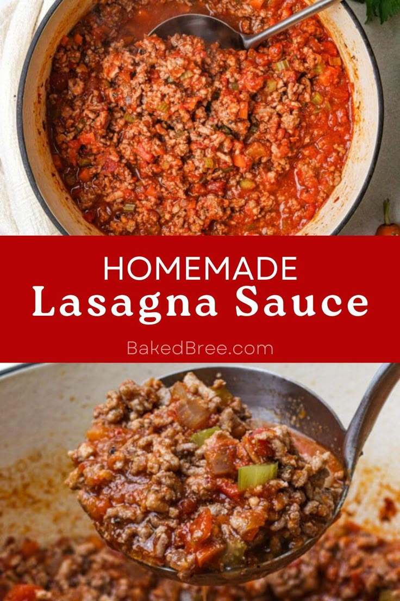

The exact lasagna recipe
- Cheese Filling
- Meat
- Sauce
- Spinach
How to make lasagne
See? I told you the meat sauce is just like making Bolognese!
Though here, we cook that meat sauce long and slow, to develop incredible rich flavours and make the beef
melt-in-your-mouth tender.
- Boil pasta: In a large pot of salted water boil lasagna noodles per the recipe below.
- Prepare meat sauce: Cook sausage and beef with onion and garlic. Drain well, add the pasta
sauce (I love
this brand)
& simmer it for a few minutes to thicken.
- Combine cheese mixture: Stir the cheese mixture together in a bowl.
- Layer & bake: Layer the meat sauce and cheese mixture with lasagna noodles and bake until
the top of the
lasagna is
golden brown.

Go back to Homepage